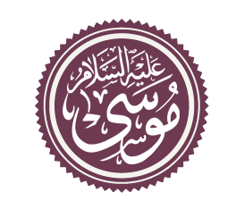
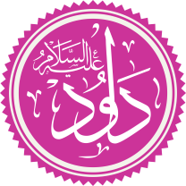
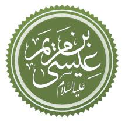
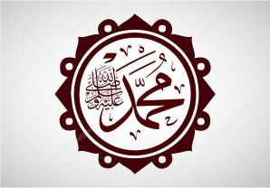

| Musa ibn Imran |
 |
- Prophet of Exodus
- The Lawgiver
- He who spoke with Allah
- Prophet of Egypt and Israel
|
Taurat
|
Prophet Ibrahim |
Da'ud ibn Yassa |
 |
- The Vicegerent of Allah
- King of United Israel
- The Psalmic Prophet
- Victor against Goliath and the Phillistines
- Prophet of Israel
|
Zabur
|
'Isa ibn Maryam |
 |
- The Promised Messiah
- Spirit of Allah
- Born through virgin birth of Maryam
- Ascended to Heaven
- Return and Victor of the Distress of End Days
- Prophet of Israel
|
Injeel
|
Muhammad ibn Abd'Allah |
 |
- The Promised One
- Seal of the Prophets
- Messenger of Allah
- Prophet of Wisdom
- The Enlightened One, Leader of the Leaders
- Universal Prophet
|
Qur'an
|